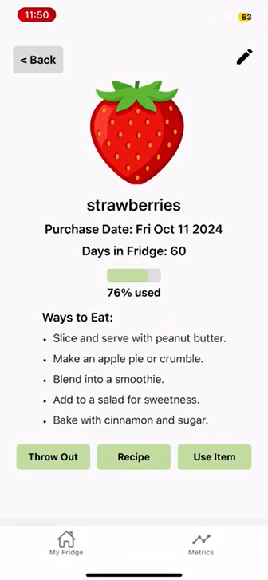
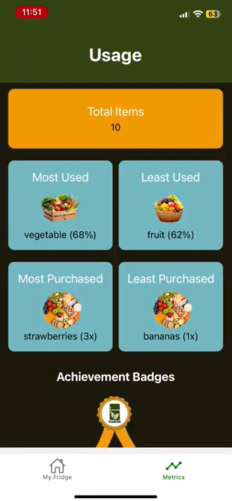
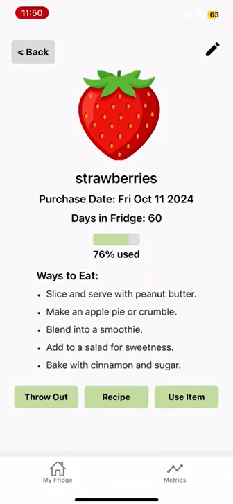
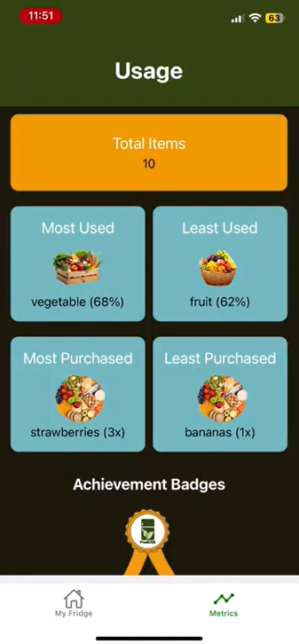

Projects
ProdUse
August 2024 - December 2024 | Digital Narrative and Interactive Design Computer Science Capstone
Project categories:
- App Development
- Prototyping
![A screenshot of the homepage of the app. At the top of the screen, there is a green header with a button for 'filters', the title of the page 'My Fridge' and a 'plus' button to add new items to the fridge. Below the beader, there is a search bar. The main portion of the screen shows three items in the user's fridge: strawberries, broccoli, and apples. Each item has an image, a percentage bar and number telling the user how much of the item they've used, and buttons to delete the item or 'see more'. At the bottom of the screen is a navigation bar for the 'My Fridge' page or the 'Metrics' page. The 'My Fridge' icon on the menu is currently highlighted.](./project-images/cs_homepage.png) 

Link to GitHub repository


Link to GitHub repository
This project was the second portion of the capstone for the Digital Narrative and Interactive Design major, focused on the computer science side of the program. I wanted to do a different project to my previous capstone, but still relate them thematically. So, I conceptualized an app designed to help people reduce food waste. The app is a cross-platform mobile app where users can log the food they buy and track their usage of it. The app keeps track of what has been logged over time and provides user's with stats about their percentage of food waste over time, what items typically go to waste, and what they more reliably will use up. This helps users gain awareness about their food waste, can help people remember what is still in their fridge, and inform better purchases in the future. The app was developed using Expo, SQLite was used for the backend database, and prototyping was completed in Figma.
I served as group leader for this project. My main priorities were ensuring clear communication between the design and development teams, delegating tasks, and providing support where other group members required it. I also worked on the database and backend integration, as I had the most prior experience in those areas.
The main page of the app shows a users "fridge," with an entry for each item they currently have logged and how much of the item they've used up. User's are able to search for specific items, sort the items, or filter them. Clicking on an item shows more details about it, and users are also able to edit this information if something was entered incorrectly. There are also separate buttons if a user needs to edit how much of the item they've used up, or if they need to throw out the item before they've finished it. From the bottom navigation bar, users can also look at their stats, which shows them badges based on their usage of the app and information about their food waste.
We carefully monitored the scope of the project to ensure that the components included in our final deliverable would all be functional. If the project were expanded, we would have liked to include a machine learning component to allow people to simply scan their grocery receipt and automatically log items. We also did not include individual icons for every item, and we instead grouped them into categories. A member of our team created all of the icons herself, so it was unrealistic to develop an icon for every possible item that could be logged. The current stats included in the app are not very detailed, so ideally this page would be expanded upon. Finally, fully utilizing the accessibility features of ReactNative to ensure the app was as usable as possible would be a really valuable improvement to the app. Most members of the team had no prior experience with the technical skills required for the project, so the final scope of the app also reflects the growth each team member went through during development.
Throughout the course of this project, we tested the app using the Expo simulator on our phones. As Expo is continuously updating and the project has not been maintained, we do not guarantee that the app will work with the latest version of Expo or the simulator.
Project skills:
- JavaScript
- ReactNative
- Expo
- SQLite
- Project Management
Counterintelligence Awareness and Reporting Pamphlets
June 2024 - August 2024 | Visual Information Specialist Internship
Link to pamphlet files
For this project, I was tasked with re-designing the Counterintelligence Awareness and Reporting trifold pamphlets for the Defense Counterintelligence and Security Agency. These pamphlets are distributed to the trusted workforce to provide education on how and why they may be targeted by foreign adversaries, and what they are responsible for reporting. There were originally 13 pamphlets I was assigned to work on.
As I began this project and started trying to create updated layouts for the pamphlets, I noticed the lack of consistency across pamphlets, and ways that the information could be conveyed more clearly. I was able to work with other members of the production team to create standardized section headings and rewrite the pamphlets to create a stronger overall product series.
Along with the content of the pamphlets, I created updated layouts, graphics, added new images, and updated the color scheme to align with DCSA branding. During this time, two additional pamphlets of new topics were added for a total of 15.
The final portion of this project was to update the Counterintelligence Best Practices for Industry booklet. This booklet contains the same content as the pamphlets, but it is designed for upper level leadership and does not have to follow branding guidelines as closely. For this, I spoke with other members of the design team to match the theme of the booklet with other products the division was working on.
Project skills:
- Adobe InDesign
- Adobe Illustrator
- Technical Writing
Steel City Gardening
January 2024 - May 2024 | Digital Narrative and Interactive Design English Capstone
Project categories:
- Graphic Design
- Web Development
Figma prototype link
Figma Dev Mode link
As a capstone for the Digital Narrative and Interactive Design major, this project was intended to represent what I have learned from all aspects of the major. For the main deliverable, I decided to prototype a website using Figma. I had never been able to individually work through the entire prototyping process, nor create a website that was entirely my own design, so I wanted to challenge myself to do that for this project.
I have always been very passionate about sustainability and finding small ways that anyone can contribute. But sustainability as a whole is a massive scope that I wouldn't be able to do justice to with only one semester of work, so I focused my attention on one aspect: food systems. I originally planned to focus more on the environmental un-sustainability of food systems and talk about topics such as food miles, but I realized that the economic side of food systems felt more impactful to talk about and like something that more people would actually connect to. The economic side of food insecurity is more about food deserts and lack of access to nutritious foods. I originally wanted to talk about this topic on a nationwide scale, but as I looked more into the history of how food deserts were created, and how often it was linked to systemic racism or classism, the scope once again became too large. In the end, I focused on food insecurity in the city of Pittsburgh.
There were three main parts of the project that went into the website. The bulk of the website is the garden guides, of which there are four types: countertop, patio, backyard, and community. Each guide includes information on the pros and cons of the garden type, the most important considerations of whether the garden is realistic for you, what produce can be grown best, and step by step instructions for how to develop it. Through my research about gardens, there often seemed to be an "all or nothing" attitude about what you "need" to do for a garden to be successful, which can make them feel inaccessible to first time gardeners or people who genuinely cannot invest what those guides are asking of them. I wanted the guides for my project to be more gentle and say that while there are some things that can be done to make a garden "better," that isn't the only way to do it.
The second portion of the website is a quiz to help people figure out what garden type is best for them. The quiz consists of seven multiple choice questions, each contributing to a score for a garden type. As someone who hasn't dealt with major food insecurity, it was important that this quiz and website didn't feel prescriptive. I didn't want to be some random person showing up and telling people the "best way" to act within their own lives. Because of this, I decided at the end of the quiz to simply show the scores for the garden types, but still allow users to choose which page to go to in the end. The primary purpose of the quiz was to provide a recommendation to make the process of deciding a garden less overwhelming for people, not add stress by making people feel like they only have one option.
The final portion of the website is dedicated to the history of Pittsburgh and how the current state of food insecurity developed. This part of the website talks about redlining practices in Pittsburgh neighborhoods that determined where people were allowed to live, and how that impacted economic development and the placement of grocery stores. This portion of the website is primarily for a secondary audience who may not be dealing with food insecurity themselves to help educate them on why a resource like this is needed. There are also links to local resources and initiatives if people would like to get involved, or as alternatives to creating their own gardens.
Looking back, there are a couple ways I would improve this project. First, for accessibility, I would add a distinction other than color to differentiate features. I used a color palette checker to reach minimum WCAG contrast standards, but I would make sure there were additional indicators such as size change or bolding text when something is overed over. I also received feedback that some of the menus are confusing, which would be easy to update and clarify navigation.
Project skills:
- Figma
- Research
- Writing
- Prototyping